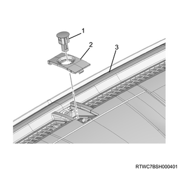
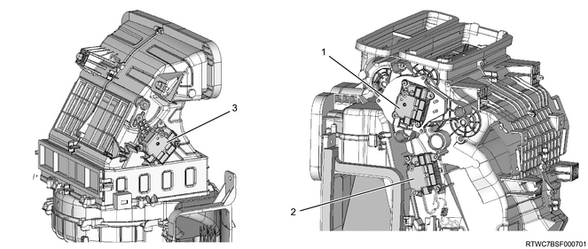
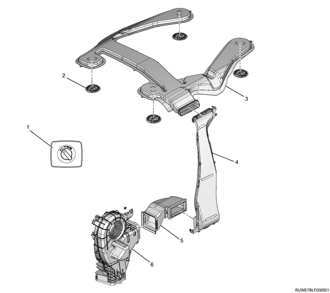

Function, structure, operation of heating, ventilation air conditioning (All models)
1. Function, structure, operation of heating, ventilation air conditioning
Heater
After the engine warms up, the heater system uses the warm engine coolant to supply warm air to the vehicle cabin.
Heater
Outside air is supplied to the vehicle cabin through the heater core of the heater evaporator unit assembly.
The vehicle cabin temperature is optimally adjusted by controlling the mixture of air between the outside air and the heater core.
The opening/closing position of the air mix door of the heater evaporator unit assembly is adjusted by operating the temperature adjustment dial for the manual A/C and auto A/C together, controlling the amount of air that passes through the heater core. This in turn controls the temperature inside the vehicle cabin. The air outlet inside the vehicle cabin can be selected arbitrarily by changing the mode of the air outlet selector dial of the manual A/C or the air outlet selector switch of the auto A/C. The inside/outside air change lever of the manual A/C or the inside/outside air change switch of the auto A/C is used for selecting between outside air intake and inside air recirculation. When set to FRESH, the outside air is always taken inside. When it is set to RECIRC, it enables inside air recirculation without taking in outside air. Although it speeds up heating of the vehicle cabin, it is better to use FRESH in order to ventilate and prevent fogging of the windshield, etc.
Control lever assembly The control lever employs cables to select the air outlet and adjust the temperature for the heater evaporator unit assembly, and to switch between inside and outside air for the blower assembly. The fan control controls the outlet air volume in 4 levels from "LOW" to "HIGH" according to the blower resistor.
Note
- Models with manual A/C
- Rear window defogger switch
- Fan speed control dial
- A/C switch
- Temperature adjustment dial
- Air selector lever
- Outlet selector dial
Rear window defogger switch
Use this switch for defogging or defrosting the rear window glass.
Fan speed control dial (Manual)
The fan speed control dial controls the speed of the blower motor in 4 levels via the blower motor assembly in the manual mode.
Inside/outside air change lever (Manual)
By sliding this lever to the left or right, either FRESH or RECIRC can be selected.
The control lever employs cables to select the air outlet and adjust the temperature for the heater evaporator unit assembly, and to switch between inside and outside air for the blower assembly. The fan control controls the outlet air volume in 4 levels from "LOW" to "HIGH" according to the blower resistor.
Outlet selector dial (Manual)
The outlet from which to blow air can be selected using this switch.
The air outlet from which to blow air is selected by adjusting the position of the rotary type mode door located inside the heater evaporator unit assembly. This mode door adjusts the opening range of each outlet of the heater evaporator unit assembly and blocks the opening sections, enabling selection of 3 blowing patterns.
Control panel assembly
The control panel assembly performs blow outlet selection, temperature adjustment of the heater evaporator unit assembly, and inside/outside air change of the blower assembly according to the actuator. The fan control regulates the outlet air volume in 4 levels according to the blower module assembly in the manual mode.
Note
- Models with auto A/C
- OFF switch
- A/C switch
- AUTO switch
- Display panel indication
- Fan speed control switch
- Windshield defroster switch
- Outside air intake switch
- Inside air recirculation switch
- Rear window defogger switch
- Temperature adjustment dial
- Outlet selector switch (MODE switch)
Fan speed control switch (Auto)
The blower motor rotation is controlled by this switch via the blower module to adjust the amount of air blow from the air outlet.
The switch can be set to the five following positions.
LOW
MEDIUM LOW
MEDIUM
MEDIUM HIGH
HIGH
Inside air recirculation switch (Auto)
Pressing this switch will select RECIRC.
When the inside air recirculation switch is pressed, inside air is recirculated without taking in the outside air.
Outside air intake switch (Auto)
Pressing this switch will select FRESH.
When the outside air intake switch is pressed, air will continuously be brought in from the outside.
The blower fan has a function to maintain proper ventilation by intake of the outside air into the vehicle cabin.
Outlet selector switch (MODE switch) (Auto)
The outlet from which to blow air can be selected using this switch.
The air outlet from which to blow air is selected by adjusting the position of the rotary type mode door located inside the heater evaporator unit assembly. This mode door adjusts the opening range of each outlet of the heater evaporator unit assembly and blocks the opening sections, enabling selection of 5 blowing patterns.
"DEFROST" can be selected by pressing the defroster switch. The A/C automatically turns ON when the defroster switch is pressed.
Note
- Rear cooler
- Rear cooler fan speed control dial
Rear cooler fan speed control dial The fan speed control dial controls the speed of the blower motor in levels via the blower motor assembly in the manual mode.
Note
- Front blower
- Intake door
- Blower fan
- Blower motor
Note
- Front outlet (Manual A/C and auto A/C)
- Windshield outlet
- Door windows outlet
- Driver side outlet
- Foot outlet
- Passenger side outlet
FACE (Auto)
At this position, the air is blown into the vehicle cabin through ventilation ducts 3 and 5.
The amount of air is controlled by the fan switch knob.
FACE (Manual)
At this position, the air is blown into the vehicle cabin through ventilation ducts 3 and 5. The amount of air is controlled by the fan speed control dial.
BI-LEVEL At this position, air is divided into two groups in the heater evaporator unit assembly and supplied to the vehicle cabin through ventilation ducts 3 and 5 and foot duct 4.
FOOT
Setting to this position supplies the entire amount of air to the feet through foot duct 5.
DEF/FOOT At this position, air is divided into two groups in the heater evaporator unit assembly and blown in through defroster nozzles 1 and 2 and foot duct 4.
DEFROST (Auto) At this position, a large portion of the air is blown to front window 4 and a small amount of air is blown to side window 3.
Note
- Mode door operation diagram (Manual A/C and auto A/C)
- Mode door (For DEF)
- Evaporator core
- Air mix door
- Heater core
- Mode door (For FOOT)
- Mode door (For FACE)
Note
- Mode door structural diagram (BI-LEVEL mode) (Manual A/C and auto A/C)

- Mode door (For DEF)
- Evaporator core
- Air mix door
- Heater core
- Mode door (For FOOT)
- Mode door (For FACE)
Temperature control dial (Manual)
Cooling intensity adjustment from MAX COLD to MIN COLD is available by adjusting the temperature of the air blown from the air outlet with this dial.
Temperature control dial (Auto)
Cooling intensity adjustment from MAX COLD to MIN COLD is available by adjusting the temperature of the air blown from the air outlet using this dial.
Note
- When set to "MAX HOT", FACE mode
- Mode door (For DEF)
- Air mix door
- Evaporator core
- Heater core
- Mode door (For FOOT)
- Mode door (For FACE)
Note
- Roof air outlet
The fan direction can be adjusted using the lever.
- 3rd seat outlet
- 2nd seat air outlet
- Rear cooler fan speed control dial
Manual A/C
The manual A/C in this vehicle is comprised of a compressor, evaporator, condenser, fan switch, etc.
The A/C is started when the fan switch is turned ON and the magnetic clutch is engaged at the engine startup. Also, it stops operating when the fan switch is turned OFF.
Besides this switch, there are functions for temporarily cutting off the A/C using systems in the A/C cycle. Such functions include detection of abnormal refrigerant pressure by the pressure switch, detection of outlet air blow temperature by the thermo switch for preventing freezing of the evaporator core, and detection of engine water temperature by the thermo switch equipped in some vehicle types.
A/C cycle
The A/C cycle has 4 functions described below. The refrigerant is circulating while repeatedly changing its state from liquid to gas then to liquid.
- Compressor
- Magnetic clutch
- Pressure switch
- Condenser (Integrated with receiver dryer)
- Evaporator assembly
- Expansion valve
- Evaporator core
- Blower motor
- Ventilation unit
- Mode (DEF/FOOT) control door
- Mode (VENT) control door
- Electronic thermostat
Evaporation
The refrigerant changes its state from liquid to gas inside the evaporator.
The refrigerant in the mist form evaporates immediately after it enters the evaporator. When the refrigerant evaporates, it takes heat from the air around the evaporator core cooling fin. The air that has lost heat is cooled and sent into the vehicle by the blower fan to lower the vehicle room temperature. The refrigerant liquid sent from the expansion valve and the evaporated refrigerant gas coexist in the evaporator, and the refrigerant changes its state from liquid to gas. During this state change from liquid to gas, the pressure inside the evaporator has to be kept low for the refrigerant to evaporate at lower temperatures. To do so, the refrigerant gas is sucked into the compressor and discharged to the outside of the evaporator.
Compression
The refrigerant is compressed by the compressor to the state where it is easy to liquefy at room temperature.
The vaporized refrigerant in the evaporator is sucked into the compressor. This function maintains the refrigerant in the evaporator at low pressure and keeps the liquid refrigerant to evaporate even at a low temperature close to 0 °C {32 °F}. The refrigerant that is sucked into the compressor is compressed inside the cylinder. Its pressure is raised so that it is easily liquefied by the outside air at room temperature.
Condensation
The refrigerant inside the condenser is cooled down by the outside air and changes its state from gas to liquid. The high temperature and high pressure gas from the compressor is cooled down and liquefied by the condenser and the outside air, and collected in the receiver dryer. The heat that is dissipated by the high temperature and high pressure refrigerant from the compressor to the outside air is known as condensing heat. This heat quantity is the sum of the heat taken by the refrigerant from inside the vehicle via the evaporator and the work performed during compression.
Expansion
The expansion valve lowers the pressure of the refrigerant liquid so that it evaporates easily.
The process where the pressure is lowered to ease evaporation before the liquefied refrigerant is sent to the evaporator is known as expansion. The expansion valve also controls the flow amount of the refrigerant liquid while lowering its pressure. In other words, since the amount of the refrigerant liquid to be evaporated inside the evaporator is determined by the amount of the heat taken at a given evaporating temperature, it is important to control the amount of the refrigerant so that it is not less or more than the necessary amount.
Compressor
The compressor compresses the low pressure, low temperature refrigerant vapor from the evaporator into a high pressure, high temperature refrigerant vapor, and sends it to the condenser to ease dissipation of heat to the outside air.
The vane rotary type fixed capacity compressors CR12Sb, manufactured by Calsonic Kansei, feature a simple structure, a lightweight, compact size, and superior mountability.
Also, the number of components used is reduced, resulting in excellent cost performance. As for noise, 10 discharges are made per rotation, so the flow of the refrigerant is smooth, and it is quiet because the fluctuation in torque is small.
Also, the specified oil amount is 150 cm3.
Note
- Compressor
- Compressor
Magnetic clutch
The compressor is driven by the drive belt from the engine crank pulley. It is, however, not desirable for the compressor to be driven each time the engine is started because it imposes a significant load on the engine. Therefore, the magnetic clutch transmits the power from the engine when the A/C is ON to activate the compressor. It stops the power transmission from the engine when the A/C is turned OFF.
Note
- Magnetic clutch
- Magnetic clutch
Condenser
The condenser forces the high temperature and high pressure refrigerant gas sent from the compressor to be cooled down by the outside air and liquefied. If the condenser is clogged or the air flow into the condenser cooling fin is blocked, it will cause an insufficient cooling capacity of the condenser and an increased load on the engine due to the raised pressure of the refrigerant cycle. When the condenser is operated normally, the refrigerant discharge line of the condenser is usually cooler than the intake line.
An electric fan is also equipped to boost the cooling effect.
Note
- Condenser, receiver dryer
- Condenser assembly, integrated with receiver dryer
Receiver dryer
The receiver dryer has the following functions.
The amount of the circulating refrigerant varies depending on the conditions of the A/C cycle, so it stores the necessary amount of the refrigerant for the A/C cycle to operate smoothly in accordance with changes in the circulating amount.
Bubbles of the refrigerant gas are included in the liquefied refrigerant from the condenser. If refrigerant including bubbles are sent to the expansion valve, the cooling capacity may become significantly deteriorated. Therefore, it separates the liquid from the bubbles and sends only the liquid to the expansion valve.
The dust and water included in the circulating refrigerant are removed using the filter and the dryer inside the receiver dryer.
Clogging in the receiver dryer may cause the A/C's performance to deteriorate. When clogging occurs at the inlet of the receiver dryer, the refrigerant pressure rises, while the pressure lowers when clogging occurs at the outlet. In both cases, cooling can barely take place. If the pipe at the outlet of the receiver dryer is unusually cold, this indicates that clogging has occurred.
Pressure switch
The pressure switch is installed in the high pressure pipe. The high pressure switch monitors the refrigerant for an abnormally high pressure. The low pressure switch monitors for refrigerant leakage to prevent compressor seizure, turning the magnetic clutch on or off at each preset pressure value.
Note
- Pressure switch

- Condenser assembly
- Refrigerant piping
- Pressure switch
| Item | Pressure switch | |
| Control pressure | Low pressure control, low pressure switch | High pressure control, high pressure switch |
| Operation | Compressor | Compressor |
| ON | ： 176 to 216 kPa { 1.8 to 2.2 kgf/cm2 / 26 to 31 psi } | ： 2840 to 3040 kPa { 29.0 to 31.0 kgf/cm2 / 412 to 441 psi } |
| OFF | ： 195 to 255 kPa { 2.0 to 2.6 kgf/cm2 / 28 to 37 psi } | 100 - 200 kPa lower pressure than "ON" operation pressure |
Evaporator
The evaporator changes the low pressure, low temperature mist type liquid refrigerant sent from the expansion valve into gas through thermal exchange with air sent from the blower motor. The vaporization heat that is generated when the liquid refrigerant evaporates into gas cools the evaporator and evaporator core fin, and then cools the air sent from the blower motor. Any moisture in the air is cooled to form water droplets, and the vehicle is dehumidified by removal these droplets from the vehicle.
Expansion valve
The expansion valve is a uniform external pressure type and is installed to the inlet of the evaporator core.
The high pressure liquid refrigerant sent from the receiver dryer is squeezed when it passes through the expansion valve, which changes it into a low pressure liquid refrigerant in mist form before it is sent to the evaporator core.
This expansion valve is comprised of a thermosensor, diaphragm, ball valve, spring adjust screw, etc. The thermosensor makes contact with the evaporator outlet pipe and controls the amount of refrigerant flow by converting the temperature variation into pressure to operate the diaphragm.
The expansion valve can also be used to adjust the amount of refrigerant flow as it ensures efficient capacity utilization of each device of the A/C cycle. Therefore, abnormalities in the expansion valve will cause both the outlet pressure and the inlet pressure values to drop, resulting in the evaporator achieving insufficient cooling performance.
Note
- Manual A/C and auto A/C
- Evaporator core
- Expansion valve
Note
- Rear cooler
- Expansion valve
- Evaporator core
Thermo switch
The thermo switch utilizes an amplifier and a thermistor to reduce operating noise, etc.
The fin sensor is installed to the outlet of the evaporator core and detects the temperature of the air that passes the evaporator core.
The OFF value is 2.7˚ C {36.9º F}, and the ON value is 6.2˚ C {43.2º F}.
Note
- Manual A/C and auto A/C
- Evaporator core
- Fin sensor
- Heater evaporator unit assembly
Refrigerant pipe
The following phenomena are observed if clogging occurs in the refrigerant pipe.
Low pressure hose
When clogging occurs in the low pressure hose, the compressor's inlet pressure and the outlet pressure drop, and the cooling capacity is lost.
High pressure hose
When clogging occurs in the high pressure hose, a leakage from the outlet line usually occurs.
High pressure pipe
When clogging occurs in the high pressure pipe, the pressures at both of the outlet and the inlet sides drop, resulting in insufficient cooling.
The high and low pressure flexible hoses are low leakage-type hoses that are equipped with a nylon coating at the innermost of the hoses.
It is also designed to prevent refrigerant leakage to the air when connecting a service tool by enabling quick connection of the service tool.
- Polyester
- Exterior rubber layer
- Interior rubber layer
- Nylon layer
Auto A/C
This auto A/C uses various sensors to accurately detect the outside temperature, the amount of solar irradiation received, the temperature of the air coming out from the evaporator, the heater core water temperature, and the vehicle cabin temperature. That information is input to the auto A/C control unit to automatically control the temperature of air coming from the air outlets, to control the air flow volume, to turn the compressor ON and OFF, and to switch air outlets. Manual operations of each auto-control is possible by disengaging the auto function.
The auto A/C control unit embedded in the micro-computer is equipped with a self-diagnosing function to make it easier to access and diagnose areas where there is trouble.
Note
- Control panel
- OFF switch
- A/C switch
- AUTO switch
- Display panel indication
- Fan speed control switch
- Windshield defroster switch
- Outside air ventilation switch
- Inside air recirculation switch
- Rear window defogger switch
- Temperature control dial
- Outlet selector switch (MODE switch)
Note
- Control Panel Switch Operations and General Functions
Note
- Control Panel Switch Operations and General Functions
Auto A/C control unit
Using a large liquid crystal display panel, the control panel displays the operating status of the auto A/C and improves visibility. A digital display for the set temperature is employed in which settings can be made in 1°C {1.8°F} increments.
Automatic room temperature control
Maintains the in-vehicle temperature at a temperature set using the temperature control switch regardless of changes in the vehicle speed, outside air temperature, sunlight conditions, number of passengers, etc.
Air amount auto control
Automatically controls the air blow amount in a continuous and sensitive manner according to the changes in the in-vehicle setting temperature.
Mode control
The mode control automatically switches the mode to FACE, BI-LEVEL or FOOT according to changes in the blow outlet temperature etc. The blow outlet can be manually selected by operating the mode switch. However, only manual selection is available for DEF/FOOT.
Cooling startup control
When starting the vehicle in a high room temperature during summer, etc., it locks the air volume to "OFF" until the evaporator cools in order to prevent a large amount of hot air from blowing into the vehicle cabin.
Sunlight condition correction control
The sun sensor utilizes a photodiode to accurately detect the amount of sunlight and quickly correct the in-vehicle temperature.
Memory when the ignition is OFF
The switch status before the ignition is turned OFF is memorized, making it easier to set when restarted.
Self-diagnosis function
The self-diagnosing function is activated by turning on the self-diagnosing function on using the panel switch. This makes it easier to conduct trouble diagnosis.
Outside air temperature display
Through the panel switch operations, the outside air temperature detected by the outside air temperature sensor is indicated in digital format on the panel display section.
Inside air temperature sensor
Inside the air temperature sensor is a sensor that detects the temperature inside the vehicle cabin. The vehicle cabin temperature is converted into a resistance and is input to the auto A/C control unit. The air temperature sensor uses an aspirator to take in air while the blower motor is running and directs the inside air to the area around the sensor.
This sensor is installed on the back of the knee bolster panel at the driver side.
- Inside air temperature sensor
- Back side of the knee bolster panel
Outside air temperature sensor
The outside air temperature sensor is a sensor that detects the temperature outside of the vehicle. The outside temperature is converted into a resistance and input to the auto A/C control unit. Also, an auto-amp determines any effects caused by the condenser or radiator that can occur after the vehicle has been running or idling, and makes any necessary corrections. However, the temperature displayed rises over time.
This sensor is installed to the lower section of the front end engine hood stay on the backside of the radiator grille.
- Outside air temperature sensor
- Front bumper assembly
Sun sensor
The sun sensor uses a photodiode sensor to detect the amount of solar irradiation. It converts correction signals to changes in the in-vehicle temperature caused by sunlight into a photo-electric current which is input to the auto A/C control unit.
This sensor is installed at the top of the instrument panel on the driver side.

- Sun sensor
- Instrument panel upper cover
- Instrument panel
Blower module assembly
The blower module assembly receives base current from the auto A/C control unit and changes the blower motor speed steplessly. The blower module assembly is installed to the blower assembly.
- Blower assembly
- Blower module assembly
Actuator
The actuator is an electromotive device which employs a small motor to drive the heater evaporator unit assembly and blower assembly mode doors based on output currents from the auto A/C control unit. There are three types of actuators including a mode actuator that switches the heater evaporator unit assembly mode, a mix actuator that changes the opening degree of the air mix door, and an intake actuator that switches the blower assembly intake.
Note
- Models with auto A/C

- Mode actuator
- Mix actuator
- Intake actuator
Configuration chart of the auto A/C system
The auto A/C control unit uses calculations based on signals from various units to automatically control fan speed and mode door opening degree. These signals are inputted from the inside air temperature sensor which detects the temperature of the air inside the vehicle, the fin sensor which detects refrigerant temperature, and the sun sensor which detects solar irradiation, as well as signals from control panel operation and potentiometer location detection signals.

Auto A/C automatic control summary
The auto A/C automatically controls the following.
Cabin temperature control
Air volume control
Cooler startup control
Air outlet control
Room temperature control
The auto-air conditioner control unit calculates using the temperature setting signals and the signals from each sensor to find the total signal. Then, it compares that with a signal from the potentiometer to determine the direction of the mix actuator rotation. The mix actuator opens the air mix door and operates that at the predetermined angle for that total signal to control the temperature to the setting.
Air volume control
The auto A/C control unit makes calculations using the temperature setting signal and the signals from each sensor to determine the total signal. Then, in response to the total signal, it converts the blower module base potential to be the predetermined blower voltage for stepless speed variation of the blower motor.
When operating in manual, the fan switch has 5 steps from LO to MAX HI to set the air flow volume.
Cool startup control
When starting the auto-air conditioner while the blow mode is FACE and BI-LEVEL and the air conditioner switch is at ON, and when the blow temperature calculated using the auto-air conditioner control unit is at a fixed condition, the auto-air conditioner control unit performs cool startup control.
For two seconds after the cooler is started, this is locked at OFF, then for five seconds after that, it is locked at LO. For six seconds after that it increases linearly from LO to the target air amount.
This control is only performed when the blower motor is started one time using the ignition switch from OFF to ON or using the AUTO switch.
Outlet control
The auto A/C control unit makes calculations using the temperature setting signals and signals from each sensor to determine the total signal. Then, it compares that with a signal from the potentiometer to determine the operating degree of the mode actuator. In response to the total signal, the mode actuator opens the mode door and operates it at a predetermined angle to control the air outlet to either FACE, BI-LEVEL or FOOT.
Note
- Ventilator system components location diagram

- Defroster nozzle
- Side defroster nozzle (RH)
- Ventilation duct side (RH)
- Ventilation duct (CTR)
- Control lever assembly
- Heater evaporator unit assembly
- Blower assembly
- Ventilation duct side (LH)
- Side defroster nozzle (LH)
Note
- Rear heater system components location diagram

- Heater evaporator unit assembly
- Rear heater duct
Note
- Rear cooler system components location diagram

- Rear cooler fan speed control dial
- Roof outlet grille
- Rear cooler duct
- Quarter pillar duct (Installed during the vehicle assembly process)
- Lower duct
- Rear cooler unit
Note
- Manual A/C components layout diagram
- A/C compressor bracket
- A/C compressor assembly
- Low pressure hose
- Heater evaporator unit assembly
- To the rear cooler unit
- Pressure switch
- High-pressure pipe
- High-pressure hose
- Condenser assembly (Integrated with receiver dryer)
Note
- Automatic A/C components location diagram
- A/C compressor bracket
- A/C compressor assembly
- Low pressure hose
- Heater evaporator unit assembly
- To the rear cooler unit
- High-pressure pipe
- Pressure switch
- High pressure hose
- Condenser assembly (Integrated with receiver dryer)
- Outside air temperature sensor
Note
- Rear cooler components location diagram
- A/C compressor bracket
- A/C compressor assembly
- Heater evaporator unit assembly
- Lower duct
- Rear cooler unit cover
- Rear cooler unit
- Low-pressure pipe
- High-pressure pipe
- High-pressure hose
- Pressure switch
- Condenser assembly (Integrated with receiver dryer)
- Outside air temperature sensor
Note
- Automatic A/C components location diagram
- Control panel assembly, automatic A/C control unit
- Sun sensor
- Inside air temperature sensor
- Heater evaporator unit assembly
- Mix actuator
- Mode actuator
- Intake actuator
- Blower module assembly
- Blower assembly